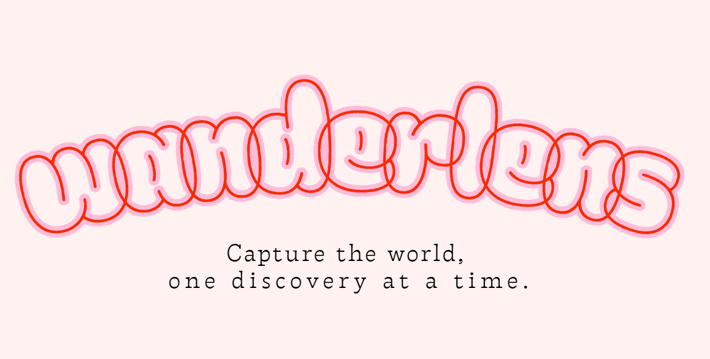

Hello World, I'm
Jiya Shah
I'm a
Third-year Computer Engineering student at the University of Toronto with a passion for technology, innovation, and problem-solving.

Third-year Computer Engineering student at the University of Toronto with a passion for technology, innovation, and problem-solving.
I'm a third-year Computer Engineering student at the University of Toronto, driven by a deep passion for using technology to make a real difference in people's lives. For me, coding is more than just solving technical problems. It's a creative and meaningful way to design solutions that can genuinely help others.
I'm especially drawn to projects and roles where technology meets human impact. Whether it's building applications that improve everyday accessibility, developing tools to support mental or physical health, or contributing to solutions that fight climate change, I'm driven to be part of it. I get excited about anything that puts people first and uses tech as a force for good.
Lately, I've been diving into the world of artificial intelligence and exploring how it can be used responsibly to improve the way we live, from smart health tech to sustainable innovations. I believe we're at a point where the right kind of innovation can solve real-world problems, and I want to be part of that movement. I'm always eager to learn, experiment, and collaborate on projects that challenge me and push boundaries.
Panache Ventures
I develop AI-powered automation infrastructure and internal tooling that support venture operations and broader system architecture initiatives. This includes building data synchronization pipelines across platforms such as HubSpot, Google Drive, and Claude to enhance operational efficiency and maintain consistent, reliable data flow across systems. I also design automated data processing and reporting workflows for startup ecosystem research, helping streamline and accelerate recurring publication and insight generation processes.

A C++ geographic information system that showcases city crime hotspots using Toronto Police Service API data. Features pathfinding algorithms to generate quick routes, built with OpenStreetMap spatial data.
See More
A phishing email detector to analyze your Gmail inbox for suspicious messages, built with React, Flask, and a custom-trained neural network.
See More
A two-player mini Dance Dance Revolution (DDR) game implemented in Verilog HDL on an FPGA board.
See More
An AI-powered travel companion using your smartphone camera to identify landmarks, translate text, discover attractions, and document your journey.
See More
A React-based movie browsing application that allows users to search for and explore detailed information about films using The Movie Database (TMDB) API.
See More
A custom implementation of the classic arcade-style driving game built from scratch in C and deployed on an FPGA board.
See More